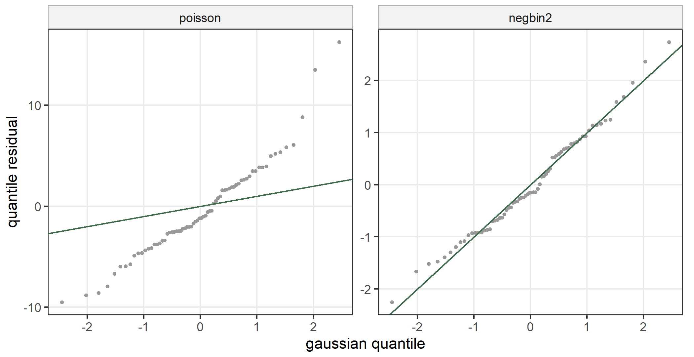
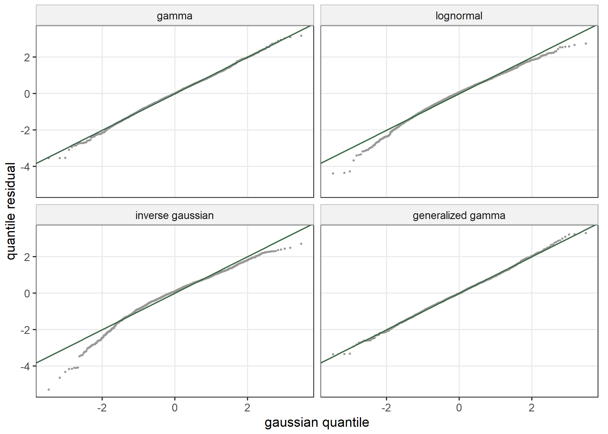
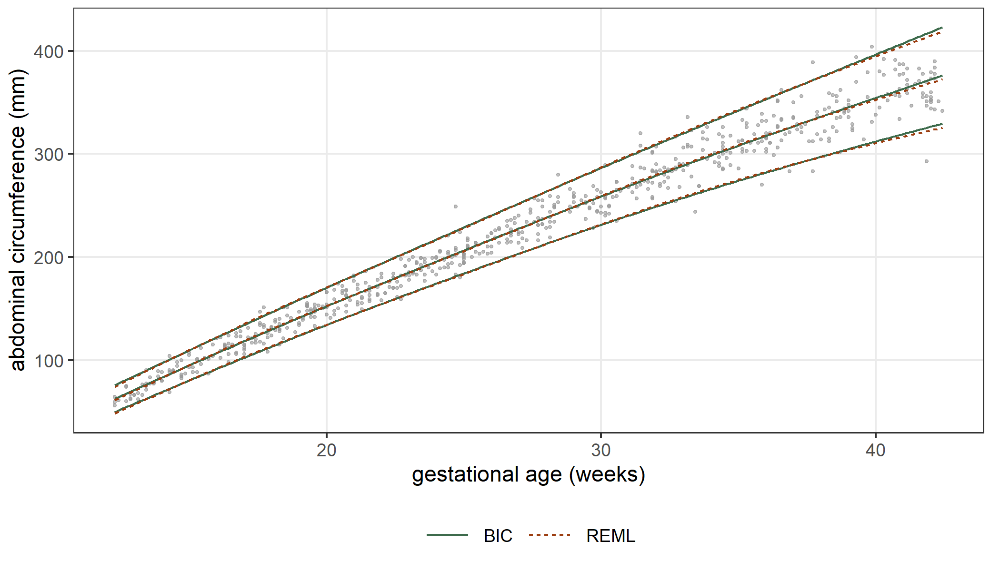
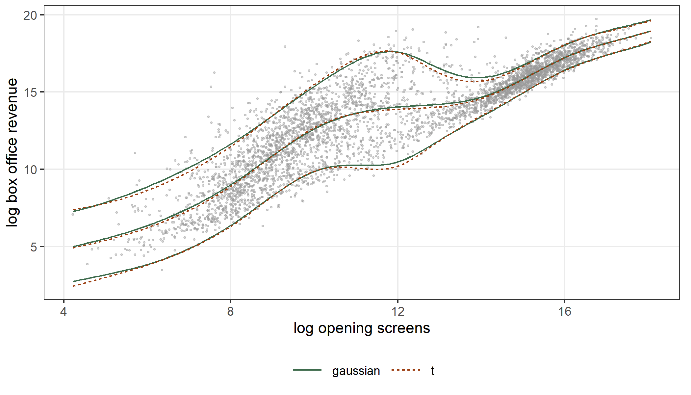
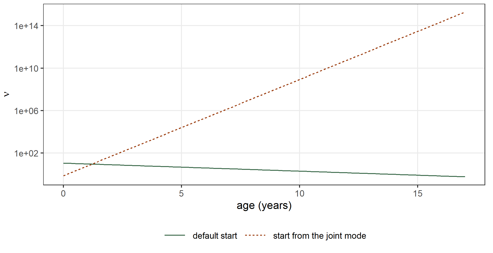

species$log_lake <- log(species$lake)
sp_pois <- statmod(fish ~ log_lake, distrib = poisson_distrib(), data = species,
outer_criterion = ml())
sp_nb2 <- statmod(fish ~ log_lake, distrib = negbin2_distrib(), data = species,
outer_criterion = ml())
sp_nb1 <- statmod(fish ~ log_lake, distrib = negbin1_distrib(), data = species,
outer_criterion = ml())
sp_pig <- statmod(fish ~ log_lake, distrib = pig1_distrib(), data = species,
outer_criterion = ml())
summary(sp_nb2)
#> A statmod fit
#>
#> Call: statmod(formula = fish ~ log_lake, distrib = negbin2_distrib(),
#> data = species, outer_criterion = ml())
#>
#> Distribution: negbin2 Observations: 70
#>
#> === mu [log link]
#>
#> Parametric terms
#> estimate se z p lower upper
#> (Intercept) 2.38 0.1912 12.44 < 1e-16 2.005 2.754
#> log_lake 0.1743 0.02518 6.92 4.504e-12 0.1249 0.2236
#>
#> === theta [log link]
#>
#> Parametric terms
#> estimate se z p lower upper
#> (Intercept) 0.8174 0.1694 4.824 1.407e-06 0.4853 1.149
#>
#> 95% intervals, bayesian variance
#> conditional log-likelihood -309.922155 effective df 3.00
#> cAIC 625.844 cBIC 632.590
#> fitted in 1.42 s
#> inner max |grad|/se 3.3e-15 min eigen 0.11
#> outer max |grad|/se 2.8e-08 min eigen 114 Choosing
In the previous chapters we fitted each model with a distribution, a criterion for the hyperparameters and an optimizer that we chose for it. This chapter explains how we make these choices. Each section works through a data set of its own: we choose a distribution for counts and for positive measurements, we compare the criteria that estimate the hyperparameters, we read the certificate of a fit and decide what to do when it does not converge, and we close with the models that statmodels7 cannot fit. Most of the data sets come from the gamlss.data package, which accompanies the book of Stasinopoulos et al. (2017) on distributional regression.
14.1 The distribution
The type of the response narrows the choice of the distribution: a count needs a distribution on the integers, a positive measurement a distribution on the positive half-line, a proportion a distribution on the unit interval. Within one type, the families differ mainly in how the variance and the shape depend on the mean. We compare them in three ways. The quantile residuals of Dunn and Smyth (1996) are standard normal when the distribution is right, so their quantile plot shows a wrong family directly. The Pearson ratio, the sum of the squared Pearson residuals divided by the residual degrees of freedom, is close to one when the variance function is right. The AIC compares the families on the scale of the likelihood.
Counts
The data frame species gives the number of fish species fish in 70 lakes and the area of each lake (Stasinopoulos et al. 2017). The number of species grows with the logarithm of the area, and we fit four count distributions with the same equation for the mean: the Poisson distribution, the two negative binomial distributions of Section 4.4, and the Poisson-inverse gaussian distribution with the dispersion \(\sigma\) (pig1_distrib()).
The criterion is ml() in all four fits. With the default reml(), statmod() estimates the coefficient of a dispersion, here the intercept of \(\log\theta\), by maximizing the restricted likelihood, as lm() estimates the residual variance with \(n - p\) in the denominator. The AIC needs the maximum likelihood estimate:
sp_nb2_reml <- statmod(fish ~ log_lake, distrib = negbin2_distrib(),
data = species)
c(reml = exp(coef(sp_nb2_reml)$theta[[1]]), ml = exp(coef(sp_nb2)$theta[[1]]),
glm.nb = MASS::glm.nb(fish ~ log_lake, data = species)$theta)
#> reml ml glm.nb
#> 2.205543 2.264576 2.264576The fit with ml() gives the estimate of glm.nb() of the MASS package (Venables and Ripley 2002). We compute the Pearson ratio and the AIC of the four families:
pearson_ratio <- function(fit) {
r <- residuals(fit, type = "pearson")
sum(r^2) / (nobs(fit) - sum(fit@edf$edf))
}
sp_table <- data.frame(
family = c("poisson", "negbin2", "negbin1", "pig1"),
logLik = c(logLik(sp_pois), logLik(sp_nb2), logLik(sp_nb1), logLik(sp_pig)),
AIC = c(AIC(sp_pois), AIC(sp_nb2), AIC(sp_nb1), AIC(sp_pig)),
pearson = c(pearson_ratio(sp_pois), pearson_ratio(sp_nb2),
pearson_ratio(sp_nb1), pearson_ratio(sp_pig)))
sp_table
#> family logLik AIC pearson
#> 1 poisson -948.0781 1900.1562 25.1228634
#> 2 negbin2 -309.9222 625.8443 1.1610217
#> 3 negbin1 -320.7679 647.5358 1.2972720
#> 4 pig1 -308.7315 623.4630 0.9683621The Pearson ratio of the Poisson model is 25.1: the counts vary far more than a Poisson distribution allows. The three distributions with a dispersion bring the ratio close to one. The AIC orders them, and the Poisson-inverse gaussian distribution has the smallest. The package gamlss (Rigby and Stasinopoulos 2005) fits the same distributions under the names NBI and PIG:
gl_nbi <- gamlss::gamlss(fish ~ log_lake, family = gamlss.dist::NBI(),
data = species, trace = FALSE)
gl_pig <- gamlss::gamlss(fish ~ log_lake, family = gamlss.dist::PIG(),
data = species, trace = FALSE)
rbind(negbin2 = c(statmod = logLik(sp_nb2), gamlss = logLik(gl_nbi)),
pig1 = c(statmod = logLik(sp_pig), gamlss = logLik(gl_pig)))
#> statmod gamlss
#> negbin2 -309.9222 -309.9222
#> pig1 -308.7315 -308.7316The quantile residuals show the difference between the Poisson model and the others (Figure 14.1). We draw them with a fixed seed, because the quantile residual of a count is randomized within the jump of the distribution function:
qr_pois <- residuals(sp_pois, seed = 1)
qr_nb2 <- residuals(sp_nb2, seed = 1)
qq <- data.frame(residual = c(qr_pois, qr_nb2),
model = rep(c("poisson", "negbin2"), each = nrow(species)))
qq$model <- factor(qq$model, levels = c("poisson", "negbin2"))
ggplot(qq, aes(sample = residual)) +
stat_qq(colour = book_grey, size = 0.9) +
geom_abline(intercept = 0, slope = 1, colour = book_palette[1]) +
facet_wrap(facets = vars(model), scales = "free_y") +
labs(x = "gaussian quantile", y = "quantile residual")
species models against gaussian quantiles. Left: Poisson. Right: negative binomial with variance \(\mu + \mu^2/\theta\). The line is the identity.
The residuals of the negative binomial model lie on the identity line, and their standard deviation is 0.995. Those of the Poisson model have a standard deviation of 4.68.
A distributional model can also give the dispersion an equation. The dispersion of the negative binomial model may change with the size of the lake:
sp_nb2_th <- statmod(fish ~ log_lake | theta ~ log_lake,
distrib = negbin2_distrib(), data = species,
outer_criterion = ml())
coef(sp_nb2_th)$theta
#> (Intercept) log_lake
#> 2.1235366 -0.1690424
c(constant = AIC(sp_nb2), modelled = AIC(sp_nb2_th))
#> constant modelled
#> 625.8443 620.4083The AIC falls by 5.44, more than the AIC of the Poisson-inverse gaussian model falls below that of the negative binomial one. Choosing a distribution and choosing its equations are one choice, and we compare all the candidates on the same AIC.
Positive measurements
The data frame rent gives the monthly net rent R, in German marks, of 1969 flats in Munich in 1993, with the floor space Fl in square metres, the year of construction A and the location loc, in three classes (Rigby and Stasinopoulos 2005). The rent grows with the floor space and with the year in two curves, which we model with smooth terms. We fit four distributions for positive responses: the gamma, the lognormal, the inverse gaussian and the generalized gamma, which has a third parameter for the shape.
rent_gamma <- statmod(R ~ s(Fl) + s(A) + loc, distrib = gamma1_distrib(),
data = rent)
rent_lnorm <- statmod(R ~ s(Fl) + s(A) + loc, distrib = lognormal1_distrib(),
data = rent)
rent_ig <- statmod(R ~ s(Fl) + s(A) + loc, distrib = invgauss1_distrib(),
data = rent)
rent_gg <- statmod(R ~ s(Fl) + s(A) + loc, distrib = gengamma1_distrib(),
data = rent)
summary(rent_gamma)
#> A statmod fit
#>
#> Call: statmod(formula = R ~ s(Fl) + s(A) + loc, distrib = gamma1_distrib(),
#> data = rent)
#>
#> Distribution: gamma1 Observations: 1969
#>
#> === mu [log link]
#>
#> Parametric terms
#> estimate se z p lower upper
#> (Intercept) 6.456 0.02926 220.6 < 1e-16 6.398 6.513
#> loc2 0.1974 0.03121 6.324 2.547e-10 0.1362 0.2585
#> loc3 0.3019 0.0336 8.985 < 1e-16 0.236 0.3677
#>
#> s(Fl) [9 coefficients, edf 1.23]
#> estimate se z p lower upper
#> lambda [reml] 48470 325900 0.09192 2.556e+10
#> lin 0.2238 0.008777 25.5 < 1e-16 0.2066 0.2411
#>
#> s(A) [9 coefficients, edf 4.02]
#> estimate se z p lower upper
#> lambda [reml] 135.3 115.6 25.38 721.6
#> lin 0.08573 0.008743 9.805 < 1e-16 0.06859 0.1029
#>
#> === phi [log link]
#>
#> Parametric terms
#> estimate se z p lower upper
#> (Intercept) -1.922 0.03119 -61.62 < 1e-16 -1.983 -1.861
#>
#> 95% intervals, bayesian variance
#> conditional log-likelihood -13921.916252 effective df 9.25
#> cAIC 27862.329 cBIC 27913.982
#> fitted in 2.41 s
#> inner max |grad|/se 9.5e-14 min eigen 0.044
#> outer max |grad|/se 0.00014 min eigen 0.98
#> 1 note: print(summary(fit), notes = TRUE)The models have smooth terms, so we compare them with the conditional AIC of Section 2.2, which summary() prints:
caic <- function(fit) summary(fit)@aic
rent_table <- data.frame(
family = c("gamma", "lognormal", "inverse gaussian", "generalized gamma"),
logLik = c(logLik(rent_gamma), logLik(rent_lnorm), logLik(rent_ig),
logLik(rent_gg)),
cAIC = c(caic(rent_gamma), caic(rent_lnorm), caic(rent_ig), caic(rent_gg)))
rent_table
#> family logLik cAIC
#> 1 gamma -13921.92 27862.33
#> 2 lognormal -13960.66 27939.38
#> 3 inverse gaussian -14039.91 28097.45
#> 4 generalized gamma -13919.19 27859.38The gamma and the generalized gamma distributions have nearly the same cAIC, 27,862.3 and 27,859.4, and the lognormal and the inverse gaussian distributions are worse by 77 and 235. The quantile residuals show why (Figure 14.2): the lognormal and the inverse gaussian distributions are skewed to the right more than the rents are, so the residuals of the largest rents fall below the identity line.
rq <- data.frame(
residual = c(residuals(rent_gamma), residuals(rent_lnorm),
residuals(rent_ig), residuals(rent_gg)),
model = rep(rent_table$family, each = nrow(rent)))
rq$model <- factor(rq$model, levels = rent_table$family)
ggplot(rq, aes(sample = residual)) +
stat_qq(colour = book_grey, size = 0.5) +
geom_abline(intercept = 0, slope = 1, colour = book_palette[1]) +
facet_wrap(facets = vars(model), ncol = 2) +
labs(x = "gaussian quantile", y = "quantile residual")
rent models against gaussian quantiles. The line is the identity.
The gamma model with the log link is also a generalized additive model, and mgcv fits it with the same REML criterion (Wood 2017):
g_rent <- mgcv::gam(R ~ s(Fl) + s(A) + loc, family = Gamma(link = "log"),
data = rent, method = "REML")
c(statmod = as.numeric(logLik(rent_gamma)), mgcv = as.numeric(logLik(g_rent)))
#> statmod mgcv
#> -13921.92 -13921.90The two log-likelihoods agree to 0.02; the bases of the smooth terms of the two packages differ, so the fitted curves are not identical. The dispersion \(\phi\) of the gamma distribution can have an equation as well. We let it depend on the floor space and the location:
rent_phi <- statmod(R ~ s(Fl) + s(A) + loc | phi ~ s(Fl) + loc,
distrib = gamma1_distrib(), data = rent)
c(constant = caic(rent_gamma), modelled = caic(rent_phi))
#> constant modelled
#> 27862.33 27824.64The cAIC falls by 37.7, much more than it separates the gamma from the generalized gamma distribution. For these data the equation of the dispersion matters more than the family.
14.2 The hyperparameters
A penalty has hyperparameters, for example the smoothing parameter \(\lambda\) of a smooth term or the variance of a random effect. statmodels7 estimates each one in one of two ways, according to the penalty.
A penalty with derivatives of every order, such as the penalty of a smooth term, a ridge or a random effect, has its hyperparameters estimated by maximizing a criterion. The argument outer_criterion of statmod() selects it: reml(), the default, ml(), or the prediction criteria aic() and bic(). The first two are the marginal likelihoods of Section 2.2. The prediction criteria compute \(-2\ell + \kappa\tau\) with \(\kappa = 2\) for AIC and \(\kappa = \log n\) for BIC, where \(\ell\) is the conditional log-likelihood and \(\tau\) is the effective number of parameters.
A penalty with a kink at zero, such as the lasso, the elastic net, SCAD and MCP, has no second derivative at zero, and the marginal criteria need it. For these penalties statmod() fits the model along a decreasing sequence of values of \(\lambda\) and keeps the value with the smallest prediction criterion. We select this criterion with the argument sparse_criterion: bic(), the default, aic() or cv().
Four criteria for two smooth terms
The data frame abdom gives the abdominal circumference y, in millimetres, of 610 fetuses and their gestational age x, in weeks (Stasinopoulos et al. 2017). Both the mean and the spread of the circumference grow with the age. We give both parameters of a gaussian distribution a smooth term and estimate the two smoothing parameters with each of the four criteria:
f_ab <- y ~ s(x) | sigma ~ s(x)
ab_reml <- statmod(f_ab, distrib = gaussian1_distrib(), data = abdom)
ab_ml <- statmod(f_ab, distrib = gaussian1_distrib(), data = abdom,
outer_criterion = ml())
ab_aic <- statmod(f_ab, distrib = gaussian1_distrib(), data = abdom,
outer_criterion = aic())
ab_bic <- statmod(f_ab, distrib = gaussian1_distrib(), data = abdom,
outer_criterion = bic())
summary(ab_reml)
#> A statmod fit
#>
#> Call: statmod(formula = f_ab, distrib = gaussian1_distrib(), data = abdom)
#>
#> Distribution: gaussian1 Observations: 610
#>
#> === mu [identity link]
#>
#> Parametric terms
#> estimate se z p lower upper
#> (Intercept) 226.7 0.5628 402.9 < 1e-16 225.6 227.9
#>
#> s(x) [9 coefficients, edf 4.51]
#> estimate se z p lower upper
#> lambda [reml] 0.05116 0.04366 0.009607 0.2725
#> lin 87.56 0.6234 140.5 < 1e-16 86.34 88.78
#>
#> === sigma [log link]
#>
#> Parametric terms
#> estimate se z p lower upper
#> (Intercept) 2.508 0.02878 87.17 < 1e-16 2.452 2.565
#>
#> s(x) [9 coefficients, edf 1.00]
#> estimate se z p lower upper
#> lambda [reml] 795900000
#> lin 0.3581 0.02877 12.44 < 1e-16 0.3017 0.4145
#>
#> 95% intervals, bayesian variance
#> conditional log-likelihood -2392.983261 effective df 7.51
#> cAIC 4800.983 cBIC 4834.121
#> fitted in 1.09 s
#> inner max |grad|/se 2.3e-08 min eigen 0.24
#> outer max |grad|/se 2.7e-08 min eigen 0.98
#> 2 notes: print(summary(fit), notes = TRUE)ab_lambda <- function(fit) hyper(fit)$estimate
ab_table <- rbind(
reml = c(ab_lambda(ab_reml), edf = sum(ab_reml@edf$edf), logLik = logLik(ab_reml)),
ml = c(ab_lambda(ab_ml), edf = sum(ab_ml@edf$edf), logLik = logLik(ab_ml)),
aic = c(ab_lambda(ab_aic), edf = sum(ab_aic@edf$edf), logLik = logLik(ab_aic)),
bic = c(ab_lambda(ab_bic), edf = sum(ab_bic@edf$edf), logLik = logLik(ab_bic)))
colnames(ab_table)[1:2] <- c("lambda_mu", "lambda_sigma")
ab_table
#> lambda_mu lambda_sigma edf logLik
#> reml 0.05116209 795885629 7.508304 -2392.983
#> ml 0.05132274 6287323297 7.508396 -2392.976
#> aic 0.05574567 4997113154 7.435479 -2393.038
#> bic 0.34963901 8852482207 5.927359 -2396.154The four criteria agree on the spread: the smoothing parameter of \(\sigma\) is above \(8.0 \times 10^{8}\) in all of them, so the smooth term of \(\sigma\) reduces to its straight line, and the standard deviation grows exponentially with the age. They differ on the mean. REML, ML and AIC give the curve of the mean about 3.5 effective degrees of freedom beyond its straight line, and BIC, whose penalty grows with \(\log n\), gives it 1.9. Figure 14.3 shows the two curves with the bands of two standard deviations.
xg <- data.frame(x = seq(from = min(abdom$x), to = max(abdom$x), length.out = 200))
band <- function(fit, label) {
m <- predict(fit, what = "mu", newdata = xg)
s <- predict(fit, what = "sigma", newdata = xg)
data.frame(x = xg$x, mean = m, lower = m - 2 * s, upper = m + 2 * s,
criterion = label)
}
bands_ab <- rbind(band(ab_reml, "REML"), band(ab_bic, "BIC"))
ggplot(abdom, aes(x = x, y = y)) +
geom_point(colour = book_grey, size = 0.6, alpha = 0.6) +
geom_line(data = bands_ab, aes(y = mean, colour = criterion, linetype = criterion)) +
geom_line(data = bands_ab, aes(y = lower, colour = criterion, linetype = criterion)) +
geom_line(data = bands_ab, aes(y = upper, colour = criterion, linetype = criterion)) +
labs(x = "gestational age (weeks)", y = "abdominal circumference (mm)")
The package mgcv fits the same model with its family gaulss(), by REML:
g_ab <- mgcv::gam(list(y ~ s(x), ~ s(x)), family = mgcv::gaulss(),
data = abdom, method = "REML")
c(statmod = as.numeric(logLik(ab_reml)), mgcv = as.numeric(logLik(g_ab)))
#> statmod mgcv
#> -2392.983 -2392.980The effective number of parameters \(\tau\) treats the hyperparameters as known, although the fit estimated them from the same data. Greven and Kneib (2010) showed that the conditional AIC of Vaida and Blanchard (2005), computed with this \(\tau\), favors the larger of two models. Wood, Pya, and Säfken (2016) proposed to add the uncertainty of the smoothing parameters to \(\tau\), through the unconditional variance \(V_u\) of Section 2.1: \[
\tau_u = \operatorname{tr}(V_u H) = \tau + \operatorname{tr}\{(V_u - V_b) H\} .
\] summary(fit, correct = TRUE) computes the cAIC with \(\tau_u\):
s_naive <- summary(ab_reml)
s_corr <- summary(ab_reml, correct = TRUE)
c(naive = s_naive@df, corrected = s_corr@df)
#> naive corrected
#> 7.508304 7.904431
c(naive = s_naive@aic, corrected = s_corr@aic)
#> naive corrected
#> 4800.983 4801.775The correction adds 0.40 to the effective number of parameters. We measure what it does to a choice between two models with a simulation. We draw 100 data sets with 20 groups of 5 observations from \(y_{ij} = 1 + 0.5 x_{ij} + \varepsilon_{ij}\), which has no group effect, fit the model with and without a random intercept, and count how often each version of the cAIC is smaller for the model with the random intercept. We repeat the simulation with a group effect of standard deviation 0.3.
caic_of <- function(fit, correct) summary(fit, correct = correct)@aic
pick <- function(sd_group, seed) {
set.seed(seed)
t(replicate(100, {
d <- data.frame(g = factor(rep(1:20, each = 5)), x = rnorm(100))
d$y <- 1 + 0.5 * d$x + rnorm(20, 0, sd_group)[d$g] + rnorm(100)
a <- statmod(y ~ x, distrib = gaussian1_distrib(), data = d)
b <- statmod(y ~ x + random(~ 1 | g), distrib = gaussian1_distrib(),
data = d)
c(naive = caic_of(b, FALSE) < caic_of(a, FALSE),
corrected = caic_of(b, TRUE) < caic_of(a, TRUE))
}))
}
none <- colMeans(pick(0, 11))
some <- colMeans(pick(0.3, 12))
rbind(`no group effect` = none, `group sd 0.3` = some)
#> naive corrected
#> no group effect 0.45 0.12
#> group sd 0.3 0.87 0.53Without a group effect, the naive cAIC is smaller for the model with the random intercept in 45% of the data sets, and the corrected cAIC in 12%. The correction has a cost: with a group effect the naive cAIC is smaller for the right model in 87% of the data sets and the corrected one in 53%.
A lasso chosen by BIC and by cross-validation
The flats of rent have three binary attributes: a bathroom of their own (B), central heating (H) and a full kitchen (L). We put these and the location under a lasso, beside the two smooth terms, and choose the \(\lambda\) of the lasso by BIC and by ten-fold cross-validation. The smoothing parameters are estimated by REML at each point of the sequence of \(\lambda\), as Section 10.3 describes.
rent_bic <- statmod(R ~ s(Fl) + s(A) + lasso(~ B + H + L + loc),
distrib = gamma1_distrib(), data = rent)
set.seed(4)
rent_cv <- statmod(R ~ s(Fl) + s(A) + lasso(~ B + H + L + loc),
distrib = gamma1_distrib(), data = rent,
sparse_criterion = cv())
hyper(rent_bic)
#> parameter term name estimate held source id
#> 1 mu s(Fl) lambda 5.446191e+03 FALSE reml <NA>
#> 2 mu s(A) lambda 1.219182e+02 FALSE reml <NA>
#> 3 mu lasso(~B + H + L + loc) lambda 7.411868e-02 FALSE bic <NA>
hyper(rent_cv)
#> parameter term name estimate held source id
#> 1 mu s(Fl) lambda 5450.597980 FALSE reml <NA>
#> 2 mu s(A) lambda 121.929715 FALSE reml <NA>
#> 3 mu lasso(~B + H + L + loc) lambda 1.596839 FALSE cv <NA>lasso_coef <- function(fit) {
cf <- coef(fit)$mu
cf[startsWith(names(cf), "lasso.")]
}
rbind(bic = lasso_coef(rent_bic), cv = lasso_coef(rent_cv))
#> lasso.B0 lasso.B1 lasso.H1 lasso.L1 lasso.loc2 lasso.loc3
#> bic 0.3250629 NA -0.2773599 0.1423239 0.1958748 0.2734718
#> cv 0.3200912 NA -0.2770358 0.1410273 0.1932641 0.2707347BIC chooses \(\lambda = 0.074\) and cross-validation \(\lambda = 1.597\). The two values differ by a factor of 22, and the coefficients hardly differ: with 1969 flats the penalty of either value is small against the log-likelihood, and the lasso sets none of the attributes to zero. The column B1 has no estimate. The lasso codes all the levels of the first factor of its formula, the two columns of B add up to the intercept, and the fit reports the second column as not identified. Section 10.7 compares the three criteria of a lasso on the crime data. Cross-validation refits the model on each fold, so it costs about ten times as much as BIC.
The Student t and its information
The data frame film90 gives, for 4031 American films of 1990, the logarithm of the box office revenue lborev1 against the logarithm of the number of screens in the opening week lboopen (Stasinopoulos et al. 2017). The revenue has outliers in both directions, and we compare a gaussian and a Student \(t\) distribution, each with smooth terms in the location and in the scale:
f_film <- lborev1 ~ s(lboopen) | sigma ~ s(lboopen)
film_g <- statmod(f_film, distrib = gaussian1_distrib(), data = film90)
film_t <- statmod(f_film, distrib = student_t1_distrib(), data = film90)
summary(film_t)
#> A statmod fit
#>
#> Call: statmod(formula = f_film, distrib = student_t1_distrib(), data = film90)
#>
#> Distribution: student t1 Observations: 4031
#>
#> === mu [identity link]
#>
#> Parametric terms
#> estimate se z p lower upper
#> (Intercept) 13.24 0.02168 610.6 < 1e-16 13.2 13.28
#>
#> s(lboopen) [9 coefficients, edf 7.49]
#> estimate se z p lower upper
#> lambda [reml] 0.8276 0.4579 0.2798 2.448
#> lin 2.861 0.01802 158.8 < 1e-16 2.826 2.896
#>
#> === sigma [log link]
#>
#> Parametric terms
#> estimate se z p lower upper
#> (Intercept) 0.0004861 0.01803 0.02696 0.9785 -0.03486 0.03583
#>
#> s(lboopen) [9 coefficients, edf 6.90]
#> estimate se z p lower upper
#> lambda [reml] 2.972 1.762 0.9296 9.5
#> lin -0.4812 0.01279 -37.63 < 1e-16 -0.5063 -0.4562
#>
#> === nu [log link]
#>
#> Parametric terms
#> estimate se z p lower upper
#> (Intercept) 2.334 0.1452 16.07 < 1e-16 2.05 2.619
#>
#> 95% intervals, bayesian variance
#> conditional log-likelihood -6113.829385 effective df 17.40
#> cAIC 12262.452 cBIC 12372.082
#> fitted in 2.22 s
#> inner max |grad|/se 1.6e-14 min eigen 0.19
#> outer max |grad|/se 0.001 min eigen 0.29
#> 1 note: print(summary(fit), notes = TRUE)
c(gaussian = caic(film_g), t = caic(film_t))
#> gaussian t
#> 12334.64 12262.45The \(t\) distribution has \(\hat\nu = 10.3\) degrees of freedom and a cAIC lower by 72. The REML criterion of these fits uses the observed information in its determinant. The argument hessian of reml() and ml() replaces it with the expected information, which for a \(t\) distribution is positive definite at every point, while the observed information of the location is not positive at an observation far in the tails:
film_te <- statmod(f_film, distrib = student_t1_distrib(), data = film90,
outer_criterion = reml(hessian = "expected"))
c(observed = exp(coef(film_t)$nu[[1]]), expected = exp(coef(film_te)$nu[[1]]))
#> observed expected
#> 10.32305 10.32218
c(observed = as.numeric(logLik(film_t)), expected = as.numeric(logLik(film_te)))
#> observed expected
#> -6113.829 -6113.827The two informations give the same fit here. The two criteria are not the same function, so their values differ, and we compare the fits by their estimates and their log-likelihoods. Figure 14.4 shows the fitted median and the 5% and 95% quantiles of the \(t\) model against those of the gaussian model.
og <- data.frame(lboopen = seq(from = min(film90$lboopen),
to = max(film90$lboopen), length.out = 200))
quant <- function(fit, dist, label) {
th <- list(mu = predict(fit, what = "mu", newdata = og),
sigma = predict(fit, what = "sigma", newdata = og))
if (label == "t") th$nu <- predict(fit, what = "nu", newdata = og)
rbind(data.frame(lboopen = og$lboopen, quantile = "5%", model = label,
value = distrib_quantile(dist, p = 0.05, theta = th)),
data.frame(lboopen = og$lboopen, quantile = "50%", model = label,
value = distrib_quantile(dist, p = 0.5, theta = th)),
data.frame(lboopen = og$lboopen, quantile = "95%", model = label,
value = distrib_quantile(dist, p = 0.95, theta = th)))
}
qf <- rbind(quant(film_t, student_t1_distrib(), "t"),
quant(film_g, gaussian1_distrib(), "gaussian"))
qf$group <- paste(qf$model, qf$quantile)
ggplot(film90, aes(x = lboopen, y = lborev1)) +
geom_point(colour = book_grey, size = 0.4, alpha = 0.4) +
geom_line(data = qf, aes(y = value, colour = model, linetype = model,
group = group)) +
labs(x = "log opening screens", y = "log box office revenue")
14.3 When a fit does not converge
An optimizer reports whether its own stopping rule was met. This is a statement about the search, and it does not tell us whether the returned point is the maximum that the model defines. The function statmod_certificate() of Section 1.10 checks this from two readings at the returned point. The first is about the coefficients: with \(g\) the gradient of the penalized log-likelihood and \(K\) its curvature, the quantity \(\tfrac{1}{2} g^\top K^{-1} g\) is the increase that one Newton step would still give, in log-likelihood units. The second is the same quantity for the criterion of the hyperparameters. The certificate returns one of four states: converged when the second reading is below its tolerance, boundary when it is below the tolerance with at least one hyperparameter at the edge of its range, not converged when the criterion would still increase, and unknown when there is no criterion with derivatives to check.
The four states
We fit five models that end in the four states. The first is the motorcycle model of Chapter 1 with a smooth standard deviation. In the second the response is pure noise. The third and the fourth have a lasso, on the ships of Section 4.1 and on the crime data of Section 10.7. The fifth is the fourth with the intercept of \(\log\sigma\) estimated by the REML criterion.
fit1 <- statmod(accel ~ s(times, bspline_smooth(k = 20)) |
sigma ~ s(times, bspline_smooth(k = 10)),
distrib = gaussian1_distrib(), data = mcycle)
set.seed(3)
noise <- data.frame(x = runif(200), y = rnorm(200))
fit_n <- statmod(y ~ s(x), distrib = gaussian1_distrib(), data = noise)
data(ships, package = "MASS")
ships <- ships[ships$service > 0, ]
ships$year <- factor(ships$year)
ships$period <- factor(ships$period)
fit_s <- statmod(incidents ~ offset(log(service)) + lasso(~ type + year + period),
distrib = poisson_distrib(), data = ships)
data(UScrime, package = "MASS")
UScrime$lrate <- log(UScrime$y)
f_crime <- lrate ~ lasso(~ M + So + Ed + Po1 + Po2 + LF + M.F + Pop + NW + U1 +
U2 + GDP + Ineq + Prob + Time, standardize = TRUE)
fit_l <- statmod(f_crime, distrib = gaussian1_distrib(), data = UScrime)
fit_l2 <- statmod(f_crime, distrib = gaussian1_distrib(), data = UScrime,
outer_criterion = reml(marginal = "sigma"))
statmod_certificate(fit1)$state
#> [1] "converged"
statmod_certificate(fit_n)$state
#> [1] "boundary"
statmod_certificate(fit_s)$state
#> [1] "unknown"
statmod_certificate(fit_l)$state
#> [1] "unknown"
statmod_certificate(fit_l2)$state
#> [1] "converged"The motorcycle model is converged: the increase that remains is \(2.4 \times 10^{-21}\) for the REML criterion and \(4.8 \times 10^{-28}\) for the penalized log-likelihood. With a response of pure noise the best smooth function is a straight line, REML takes the smoothing parameter to \(1.3 \times 10^{8}\), where the criterion is flat, and the state is boundary. The two models with a lasso have one hyperparameter with a kink, chosen along a sequence of values, so there is no criterion with derivatives and the state is unknown. When we name sigma in the argument marginal of reml(), the criterion estimates the intercept of \(\log\sigma\) at the value of \(\lambda\) that the sequence chose, the criterion has a gradient in that estimate, and the state is converged.
A kink in the log-density
The Laplace distribution has the log-density \(-\log(2\sigma) - \lvert y - \mu\rvert/\sigma\), which has no derivative in \(\mu\) at \(\mu = y\), and its maximum likelihood estimate of \(\mu\) is the least absolute deviations fit. We fit it to the stackloss data of Brownlee (1965) and compare the result with the exact fit of the quantreg package (Koenker 2005):
lad <- statmod(stack.loss ~ Air.Flow + Water.Temp + Acid.Conc.,
distrib = laplace_distrib(), data = stackloss)
rq_fit <- quantreg::rq(stack.loss ~ Air.Flow + Water.Temp + Acid.Conc.,
data = stackloss)
rbind(statmodels7 = coef(lad)$mu, quantreg = coef(rq_fit))
#> (Intercept) Air.Flow Water.Temp Acid.Conc.
#> statmodels7 -39.68519 0.8308671 0.5782931 -0.06134195
#> quantreg -39.68986 0.8318841 0.5739130 -0.06086957
statmod_certificate(lad)$state
#> [1] "unknown"The two sets of coefficients differ by at most 0.005, and the sums of absolute residuals are 42.0847 for statmodels7 and 42.0812 for the exact fit. The inner fit stops when the gradient of the log-likelihood is small, and at a kink the gradient does not become small, so the fit stops close to the minimum but not at it. It reports converged = FALSE, and the certificate cannot read a curvature at the kink, so its state is unknown. For such a distribution the coefficients of quantreg are the reference.
A search that needs other arguments
The Student \(t\) model of Section 5.1 with an equation for the degrees of freedom is a harder problem:
f_nu <- GAG ~ Age | sigma ~ Age | nu ~ AgeWith the default arguments the outer search does not converge on these data: it runs for about a minute and a half and stops at a point where the gradient of the criterion cannot be computed. We show the same kind of failure in a fraction of the time by giving Newton’s method, which the search uses with the observed information, a budget of three iterations:
gag_b <- statmod(f_nu, distrib = student_t1_distrib(), data = GAGurine,
outer_optimizer = optimizers7::newton(maxit = 3))
cert_b <- statmod_certificate(gag_b)
cert_b$state
#> [1] "not converged"
cert_b$reason
#> [1] "the outer criterion would still rise by 34.14 at the reported point, against 0.01 -- that is the step its own curvature calls for, and the gradient there is 694.3"The certificate says that the criterion is still rising. The first thing to change is the information in the criterion. The expected information of the \(t\) distribution is positive definite everywhere:
gag_e <- statmod(f_nu, distrib = student_t1_distrib(), data = GAGurine,
outer_criterion = reml(hessian = "expected"))
statmod_certificate(gag_e)$state
#> [1] "converged"
c(criterion = gag_e@criterion, logLik = as.numeric(logLik(gag_e)))
#> criterion logLik
#> -928.4779 -923.8909
coef(gag_e)$nu
#> (Intercept) Age
#> 2.4223769 -0.1741605This fit is certified, and the degrees of freedom fall with the age. A certified point is a maximum of the criterion, but not necessarily the highest one. We check this by starting the search from another point: the fit with the hyperparameters held at their starting values (outer_criterion = NULL), which estimates every coefficient at the joint mode, gives a start through start_from():
gag_0 <- statmod(f_nu, distrib = student_t1_distrib(), data = GAGurine,
outer_criterion = NULL)
gag_je <- statmod(f_nu, distrib = student_t1_distrib(), data = GAGurine,
outer_criterion = reml(hessian = "expected"),
start = start_from(gag_0))
gag_jo <- statmod(f_nu, distrib = student_t1_distrib(), data = GAGurine,
start = start_from(gag_0))
statmod_certificate(gag_je)$state
#> [1] "converged"
statmod_certificate(gag_jo)$state
#> [1] "converged"
c(expected = gag_je@criterion, observed = gag_jo@criterion)
#> expected observed
#> -927.7679 -927.6902
coef(gag_je)$nu
#> (Intercept) Age
#> -0.312492 2.087787From this start the search with the expected information reaches a criterion higher by 0.71 than the first fit, and the search with the observed information converges as well, with the default arguments. The two maxima describe different models (Figure 14.5): at the first the degrees of freedom fall from about 11 at birth, at the second they rise with the age from below one. The criterion prefers the second. The general lesson is that a certificate is local: when a model is hard, we fit it from more than one start, compare the criteria of fits that use the same information, and keep the highest.
ag <- data.frame(Age = seq(from = 0, to = 17, length.out = 100))
nu_df <- rbind(
data.frame(Age = ag$Age, nu = predict(gag_e, what = "nu", newdata = ag),
maximum = "default start"),
data.frame(Age = ag$Age, nu = predict(gag_je, what = "nu", newdata = ag),
maximum = "start from the joint mode"))
ggplot(nu_df, aes(x = Age, y = nu, colour = maximum, linetype = maximum)) +
geom_line() +
scale_y_log10() +
labs(x = "age (years)", y = expression(nu))
14.4 What statmodels7 does not do
Some models cannot be fitted with statmodels7 at present, and for each of them statmod() stops with a message that names the cause.
A response with several components, such as a pair of measurements on the same subject, needs a multivariate distribution. distributions7 has four multivariate families, and distributions7::fit_distrib() fits them with constant parameters, but statmod() does not let their parameters depend on covariates:
set.seed(3)
d_mv <- data.frame(x = runif(50))
d_mv$Y <- cbind(rnorm(50), rnorm(50))
statmod(Y ~ x, distrib = mvgaussian1_distrib(2), data = d_mv)
#> Error:
#> ! statmod() does not fit a multivariate response: 'multivariate gaussian [2d, sigma=log_cholesky]' describes a vector of
#> responses, and this layer models one response per observation. The family
#> can be fitted with constant parameters by distributions7::fit_distrib().A censored response, in which some values are known only to lie above or below a limit, is marked by cens(), but statmod() has no censored likelihood:
statmod(cens(accel, accel < -100) ~ times, distrib = gaussian1_distrib(),
data = mcycle)
#> Error:
#> ! A censored response is not fitted: `cens()` marks the statuses and this package has no censored likelihood to give them to. Fit the observed values, or use distributions7's cdf derivatives directly.A model can contain at most one structural term, that is one gas(), one regime() or one marginal break-point term. Two score-driven terms, one in the mean and one in the scale, would form one joint recursion, which statmodels7 does not implement:
data(EuStockMarkets)
dax <- data.frame(r = 100 * diff(log(EuStockMarkets[, "DAX"])))
statmod(r ~ gas(p = 1, q = 1) | sigma ~ gas(p = 1, q = 1),
distrib = gaussian1_distrib(), data = dax)
#> Error:
#> ! statmod() fits at most one structural term and this model has 2:
#> 'gas(p = 1, q = 1)' in 'mu', 'gas(p = 1, q = 1)' in 'sigma'.
#> Each rewrites the predictor or the likelihood the others would be read at,
#> so the pair is one recursion written as two and neither term implements it.The hidden Markov model of regime() has one more restriction: its transition probabilities are constant, so covariates can shift the mean of every state, as in waiting ~ duration + regime(k = 2), but they cannot change the probability of moving from one state to another.
A distribution with a kink in a parameter, such as the Laplace distribution above, cannot be combined with a smooth term or a random effect in that parameter, because the REML criterion reads the second derivative of the log-density:
statmod(accel ~ s(times), distrib = laplace_distrib(), data = mcycle)
#> Error:
#> ! the REML criterion needs 2 derivatives of the log-density in every parameter, and 'laplace' has 0 of them in 'mu' -- its log-density carries an absolute value of an argument that moves with 'mu', so the curvature the REML criterion reads sits on a set of measure zero in the response. Fit with outer_criterion = NULL, setting the hyperparameters yourself through hyper, or model 'mu' with a family that is smooth in it.A discontinuous break-point term cannot develop its break-point with a random effect, because its coefficients are the development multiplied by the change of level, and the penalty would act on that product. The smoothed constructions of Section 11.6 do not have this restriction:
set.seed(5)
d_j <- data.frame(id = factor(rep(1:12, each = 25)),
x = rep(seq(from = 0, to = 10, length.out = 25), 12))
d_j$y <- 1 + 2 * (d_j$x > 5) + rnorm(300, sd = 0.3)
statmod(y ~ jump(x, psi ~ random(~ 1 | id)), distrib = gaussian1_distrib(),
data = d_j)
#> Error:
#> ! a sub-term carrying a penalty is rejected on a developed break-point of a discontinuous construction: the estimated coefficients are -delta * gamma, the development scaled by the change of level, so the penalty would act on that rather than on the development.The wrapper fixed() holds a parameter at one value, and a value for each observation is not accepted:
fixed(gaussian1_distrib(), sigma = runif(10) + 1)
#> Error:
#> ! The value fixing 'sigma' must be a single finite number.A term nl() written as an R function cannot give its parameters equations of their own, because only a formula says where a parameter enters the model:
statmod(rate ~ 0 + nl(function(conc, Vm, K) Vm * conc / (K + conc), K ~ state,
params = c("Vm", "K"), start = list(Vm = 200, K = 0.1)),
distrib = gaussian1_distrib(), data = Puromycin)
#> Error:
#> ! 'subformulas' needs to know where a parameter enters the model, which only a formula says; give 'fn' as a formula to develop a parameter with covariates.A moment of the distribution, such as the mean of a gamma response with a dispersion, has a prediction but no standard error:
gag_gamma <- statmod(GAG ~ Age, distrib = gamma1_distrib(), data = GAGurine)
predict(gag_gamma, what = "mean", newdata = data.frame(Age = 5), se = TRUE)
#> Error:
#> ! 'mean' has no standard error here. A moment's would need its
#> derivative in every parameter, which the distribution does not
#> offer; ask for a parameter (mu, phi), for "parameter", or for "link".Cross-validation chooses only the hyperparameter of a penalty with a kink. For a smooth term the criteria of the first part of Section 14.2 estimate the smoothing parameter without refitting:
statmod(accel ~ s(times), distrib = gaussian1_distrib(), data = mcycle,
outer_criterion = cv())
#> Error:
#> ! cv() has nothing to select: no term here carries a penalty
#> with a kink. A smoothing parameter that is twice differentiable is
#> estimated by reml(), ml(), aic() or bic(), which read a criterion
#> rather than refitting on folds.Finally, the intervals of confint() and predict() use the gaussian limit of the estimators, with the quantile 1.96 for a 95% interval. With a few observations these intervals are too narrow. We measure this for the half-saturation concentration \(K\) of the Michaelis–Menten model of Section 2.3, with 12 observations. We draw 200 data sets from the fitted model and count how often the 95% Wald interval of statmodels7 and the interval of confint() for nls(), which uses the \(t\) distribution, contain the true \(K\).
puro <- Puromycin[Puromycin$state == "treated", ]
fit_p <- statmod(rate ~ 0 + nl(~ Vm * conc / (K + conc)),
distrib = gaussian1_distrib(), data = puro)
th_p <- coef(fit_p)$mu
s_p <- exp(coef(fit_p)$sigma[[1]])
set.seed(13)
cover_p <- t(replicate(200, {
d <- puro
d$rate <- th_p[["nl.Vm"]] * d$conc / (th_p[["nl.K"]] + d$conc) +
rnorm(nrow(d), 0, s_p)
f <- statmod(rate ~ 0 + nl(~ Vm * conc / (K + conc)),
distrib = gaussian1_distrib(), data = d)
ci <- confint(f, readable = FALSE)
k <- ci[ci$coefficient == "nl.K", ]
n <- suppressMessages(confint(nls(rate ~ Vm * conc / (K + conc), data = d,
start = list(Vm = 200, K = 0.05))))["K", ]
c(wald = k$lower <= th_p[["nl.K"]] && th_p[["nl.K"]] <= k$upper,
nls = n[[1]] <= th_p[["nl.K"]] && th_p[["nl.K"]] <= n[[2]])
}))
colMeans(cover_p)
#> wald nls
#> 0.925 0.955The Wald intervals contain the true \(K\) in 92.5% of the data sets and the intervals of nls() in 95.5%, against a nominal 95%. With 200 data sets the standard error of each proportion is about 1.5%. For small samples we can use the parametric bootstrap of Section 11.2.1 instead of the gaussian limit.